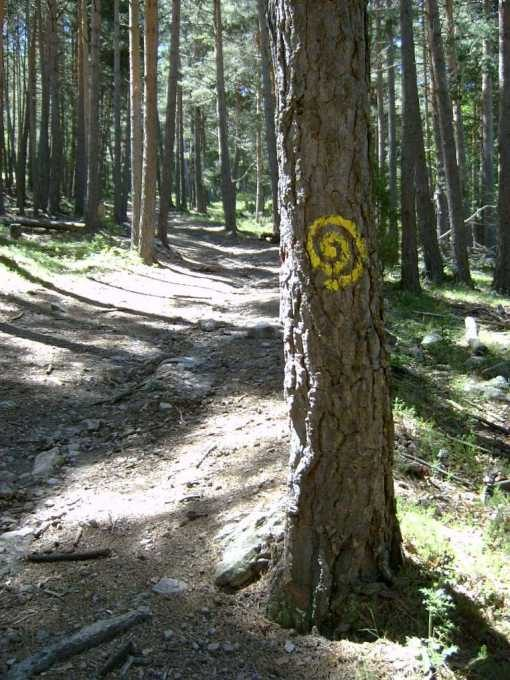
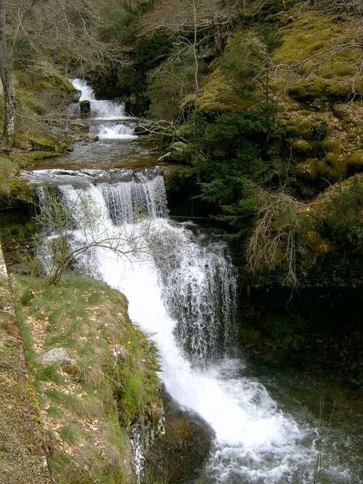

Cebollera
Villoslada de Cameros · comarca del Iregua
- Distancia9,4 km
- Desnivel460 m
- Tiempo orientativo3 h 30 min
- Dificultadmedia
- Época recomendadatodo el año
- Terrenocamino y senda
No podía faltar en la lista de “Lugares con encanto” de La Rioja un paseo por el Parque Natural Sierra de Cebollera. Nos aprovecharemos de la red básica de recorridos balizados del Parque y utilizaremos dos de ellos: el nº 3 “Sendero del Achichuelo” y el nº 4 “Sendero de las Cascadas”, para realizar nuestro paseo del día. Estos recorridos forman parte de un conjunto de cinco cuya información se suministra en una pequeña carpeta que podéis conseguir en el Centro de Interpretación del Parque que está en el pueblo de Villoslada.
Dicho Centro de Interpretación, con sus exposiciones y audiovisuales, será también una estupenda propuesta para completar nuestra jornada.


Recorrido
A unos 3 kilómetros de Villoslada, en la carretera por la que se accede hasta la ermita de Lomos y junto al puente que cruza el río, está situado el pequeño refugio del Achichuelo. Tomamos un camino asfaltado paralelo al río que transita por su margen izquierdo (itinerario nº 3). Enseguida el asfalto desaparece y llegamos a un desvío en el que debemos continuar hacia la izquierda para comenzar a descender hacia el lugar conocido como “La Blanca”, donde hay unos merenderos y una enorme escultura en forma de calavera.
Continuamos por la pista hacia “Puente Ra”. Cruzamos el puente, cambiamos a la margen derecha del río y seguimos remontando la corriente por el camino principal (itinerario nº 4 en sentido contrario al descrito en el folleto). En poco más de 1 kilómetro llegamos a las famosas cascadas de Puente Ra. A continuación retrocedemos unos cientos de metros sobre nuestros pasos para llegar hasta un desvío señalizado que nos indica la dirección hacia la Ermita de Lomos.
Lo tomamos y comenzamos a ascender entre pinos por un empinado sendero. Llegamos a un claro con un chozo y, enseguida, a una pista que tomaremos hacia la izquierda y nos llevará hasta la Ermita de Lomos de Oríos. Partimos, en ascenso, por la parte alta de la ermita (itinerario nº 3) en busca de la fuente de la Romanizosa y la pista del Sillar.
En este tramo es en el que se concentran la mayor parte de las esculturas del Parque. Un largo descenso nos llevará hasta la confluencia con el arroyo de las Rameras, momento en que giraremos bruscamente a nuestra izquierda para tomar un sendero paralelo al cauce del Iregua, por su margen derecho, que nos llevará hasta el punto del que partimos.


{kind=link}
{kind=link}